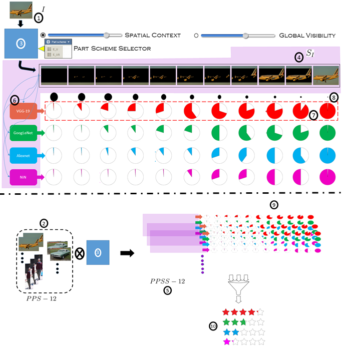
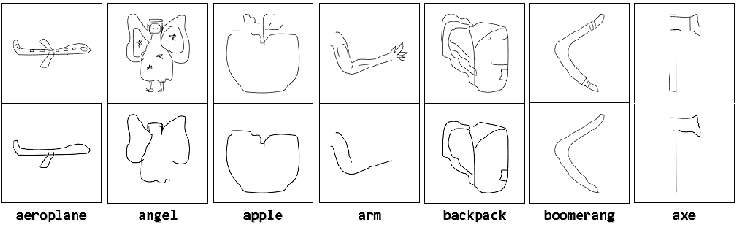
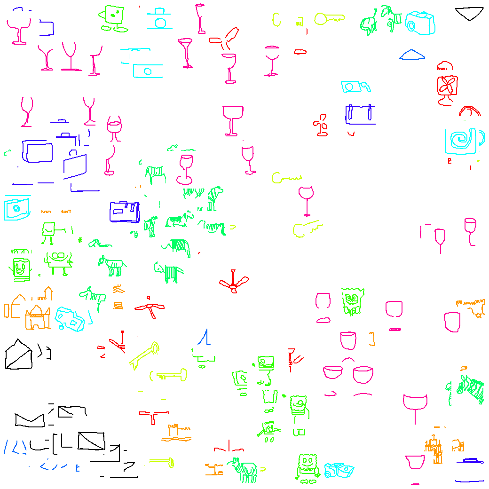
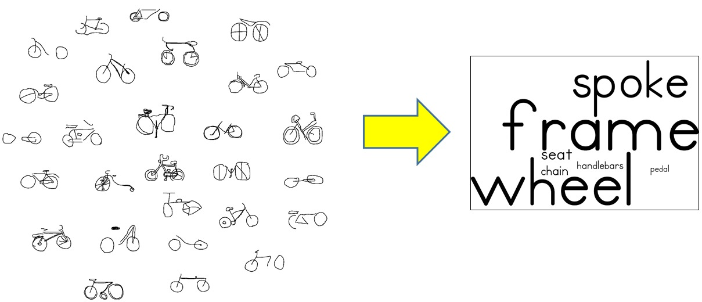
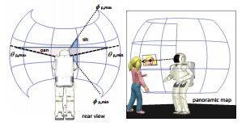
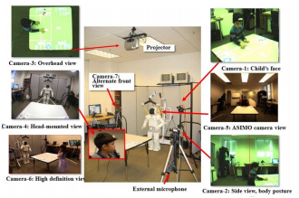
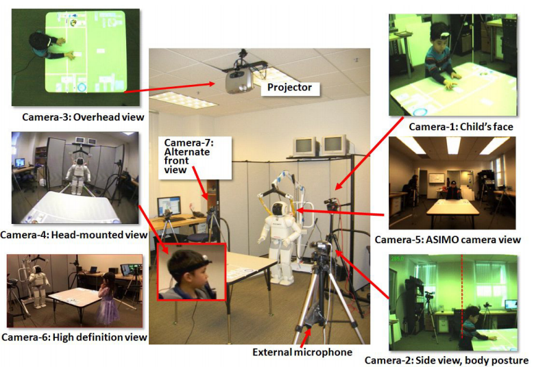
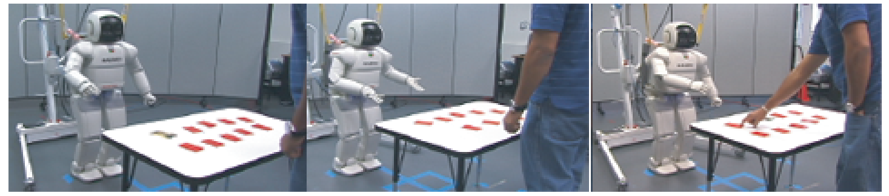
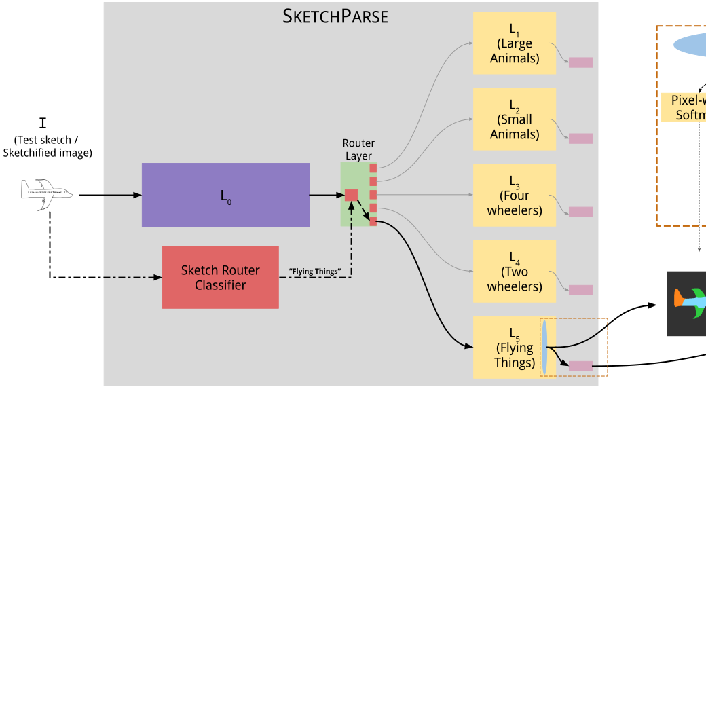

Past Research


Visual Recognition encompasses many important sub-topics in Computer Vision. The recognition problem and related approach are intimately tied to the specific task. In the course of my work, I have explored recognition of objects for various modalities (hand-drawn sketches, artistic depictions, photos), printed text characters from Indian language documents and human activities. In particular, my work on online sketch recognition is currently state-of-the-art for large-scale sketch object recognition.
Object depictions tend to be available across a spectrum which is characterized by level and richness of detail. At one extreme, we have color photographs and at the other extreme, we have black-and-white line drawings. In my Ph.D. work, I posed the question: Starting from an object line-drawing, can we "extend" the spectrum mentioned previously and create an even sparser yet recognizable representation of the object ? In the course of my work, I have shown that we can answer this question in the affirmative. Specifically, I designed a novel sketch-based visual representation for objects called category-epitome. My work also includes extensive analysis of category-epitomes across a large number of object categories and reveals many interesting aspects about this novel representation.
Relevant Publications
Recognition
-

'Part'-ly first among equals: Part-based benchmarking for state-of-the-art object recognition architectures
Ravi Kiran Sarvadevabhatla, Shanthakumar Venkatraman, R. Venkatesh Babu
In Asian Conference on Computer Vision (ACCV), Taipei,Taiwan ROC, 2016
Top-1/Top-5 error based benchmarking results for large-scale object recognition datasets do not reveal which aspects of recognition problem (robustness to occlusion, loss of global detail) the classifiers are good at. Moreover, the overall approach provides a falsely optimistic picture due to dataset bias. In this paper, we propose a novel semantic-part based dataset and benchmarking approach which overcomes the shortcomings mentioned above.
Paper Abstract Project page Bibtex
@article{DBLP:journals/corr/Sarvadevabhatla16b,
author = {Ravi Kiran Sarvadevabhatla and Shanthakumar Venkatraman and R. Venkatesh Babu},
title = {'Part'ly first among equals: Semantic part-based benchmarking for state-of-the-art object recognition systems},
journal = {CoRR},
volume = {abs/1611.07703},
year = {2016},
url = {http://arxiv.org/abs/1611.07703},
timestamp = {Thu, 01 Dec 2016 19:32:08 +0100},
biburl = {http://dblp.uni-trier.de/rec/bib/journals/corr/Sarvadevabhatla16b},
bibsource = {dblp computer science bibliography, http://dblp.org}
}An examination of object recognition challenge leaderboards (ILSVRC, PASCAL-VOC) reveals that the top-performing classifiers typically exhibit small differences amongst themselves in terms of error rate/mAP. To better differentiate the top performers, additional criteria are required. Moreover, the (test) images, on which the performance scores are based, predominantly contain fully visible objects. Therefore, `harder' test images, mimicking the challenging conditions (e.g. occlusion) in which humans routinely recognize objects, need to be utilized for benchmarking. To address the concerns mentioned above, we make two contributions. First, we systematically vary the level of local object-part content, global detail and spatial context in images from PASCAL VOC 2010 to create a new benchmarking dataset dubbed PPSS-12. Second, we propose an object-part based benchmarking procedure which quantifies classifiers' robustness to a range of visibility and contextual settings. The benchmarking procedure relies on a semantic similarity measure that naturally addresses potential semantic granularity differences between the category labels in training and test datasets, thus eliminating manual mapping. We use our procedure on the PPSS-12 dataset to benchmark top-performing classifiers trained on the ILSVRC-2012 dataset. Our results show that the proposed benchmarking procedure enables additional differentiation among state-of-the-art object classifiers in terms of their ability to handle missing content and insufficient object detail. Given this capability for additional differentiation, our approach can potentially supplement existing benchmarking procedures used in object recognition challenge leaderboards.
-

Enabling my robot to play Pictionary: Recurrent Neural Networks for sketch recognition
Ravi Kiran Sarvadevabhatla, Jogendra Nath Kundu, R. Venkatesh Babu
In ACM Multimedia Conference (ACMMM), Amsterdam, The Netherlands 2016
We propose a Recurrent Neural Network architecture which exploits the long-term sequential and structural regularities in sketch stroke data for large-scale recognition of hand-drawn object sketches.
Paper Abstract Bibtex
@inproceedings{Sarvadevabhatla:2016:EMR:2964284.2967220,
author = {Sarvadevabhatla, Ravi Kiran and Kundu, Jogendra and R, Venkatesh Babu},
title = {Enabling My Robot To Play Pictionary: Recurrent Neural Networks For Sketch Recognition},
booktitle = {Proceedings of the 2016 ACM Conference on Multimedia},
year = {2016},
location = {Amsterdam, The Netherlands},
pages = {247--251},
url = {http://doi.acm.org/10.1145/2964284.2967220},
publisher = {ACM},
address = {New York, NY, USA},
}Freehand sketching is an inherently sequential process. Yet, most approaches for hand-drawn sketch recognition either ignore this sequential aspect or exploit it in an ad-hoc manner. In our work, we propose a recurrent neural network architecture for sketch object recognition which exploits the long-term sequential and structural regularities in stroke data in a scalable manner. Specifically, we introduce a Gated Recurrent Unit based framework which leverages deep sketch features and weighted per-timestep loss to achieve state-of-the-art results on a large database of freehand object sketches across a large number of object categories. The inherently online nature of our framework is especially suited for on-the-fly recognition of objects as they are being drawn. Thus, our framework can enable interesting applications such as camera-equipped robots playing the popular party game Pictionary with human players and generating sparsified yet recognizable sketches of objects.
-

SwiDeN: Convolutional Neural Networks for Depiction Invariant Object Recognition
Ravi Kiran Sarvadevabhatla, Shiv Surya, Srinivas SS Kruthiventi, R. Venkatesh Babu
In ACM Multimedia Conference (ACMMM), Amsterdam, The Netherlands 2016
In this paper, we present SwiDeN: our Convolutional Neural Network (CNN) architecture which recognizes objects regardless of how they are visually depicted (line drawing, realistic shaded drawing, photograph etc.)
Paper Code Abstract Bibtex
@inproceedings{Sarvadevabhatla:2016:SCN:2964284.2967208,
author = {Sarvadevabhatla, Ravi Kiran and Surya, Shiv and Kruthiventi, Srinivas S S and R., Venkatesh Babu},
title = {SwiDeN: Convolutional Neural Networks For Depiction Invariant Object Recognition},
booktitle = {Proceedings of the 2016 ACM on Multimedia Conference},
series = {MM '16},
year = {2016},
isbn = {978-1-4503-3603-1},
location = {Amsterdam, The Netherlands},
pages = {187--191},
numpages = {5},
url = {http://doi.acm.org/10.1145/2964284.2967208},
doi = {10.1145/2964284.2967208},
acmid = {2967208},
publisher = {ACM},
address = {New York, NY, USA},
keywords = {convolutional neural networks, deep learning, depiction-invariance, object category recognition},
}Current state of the art object recognition architectures achieve impressive performance but are typically specialized for a single depictive style (e.g. photos only, sketches only). In this paper, we present SwiDeN: our Convolutional Neural Network (CNN) architecture which recognizes objects regardless of how they are visually depicted (line drawing, realistic shaded drawing, photograph etc.). In SwiDeN, we utilize a novel `deep' depictive style-based switching mechanism which appropriately addresses the depiction-specific and depiction-invariant aspects of the problem. We compare SwiDeN with alternative architectures and prior work on a 50-category Photo-Art dataset containing objects depicted in multiple styles. Experimental results show that SwiDeN outperforms other approaches for the depiction-invariant object recognition problem.
-

Recognizing Human Activities from Constituent Actions
Ravi Kiran Sarvadevabhatla, Karteek Alahari, C.V. Jawahar
In National Conference on Communications (NCC), Kharagpur, India 2005
Paper Abstract Bibtex
@inproceedings{activity05,
title={Recognizing Human Activities from Constituent Actions},
author={Ravi Kiran Sarvadevabhatla, Karteek Alahari, C.V. Jawahar},
booktitle={National Conference on Communications},
pages={351--355},
year={2005},
organization={IEEE}
Many of the human activities such as Jumping, Squatting have a correlated spatiotemporal structure. They are composed of homogeneous units. These units, which we refer to as actions, are often common to more than one activity. Therefore, it is essential to have a representation which can capture these activities effectively. To develop this, we model the frames of activities as a mixture model of actions and employ a probabilistic approach to learn their low-dimensional representation. We present recognition results on seven activities performed by various individuals. The results demonstrate the versatility and the ability of the model to capture the ensemble of human activities.

-

A Bilingual OCR for Hindi-Telugu Documents and its Applications
C.V. Jawahar, MNSSK Pavan Kumar, Ravi Kiran Sarvadevabhatla
In Seventh International Conference on Document Analysis and Recognition ( ICDAR ), Edinburgh, UK 2003
Paper Abstract Bibtex
@inproceedings{Jawahar:2003:BOH:938979.939243,
author = {Jawahar, C. V. and Kumar, M. N. S. S. K. Pavan and Kiran, S. S. Ravi Kiran} ,
title = {A Bilingual OCR for Hindi-Telugu Documents and Its Applications},
booktitle = {Proceedings of the Seventh International Conference on Document Analysis and Recognition - Volume 1},
series = {ICDAR '03},
year = {2003},
isbn = {0-7695-1960-1},
pages = {408--},
url = {http://dl.acm.org/citation.cfm?id=938979.939243},
acmid = {939243},
publisher = {IEEE Computer Society},
address = {Washington, DC, USA},
}This paper describes the character recognition processfrom printed documents containing Hindi and Telugu text. Hindi and Telugu are among the most popular languages in India. The bilingual recognizer is based on Principal Component Analysis followed by support vector classification. This attains an overall accuracy of approximately 96.7%. Extensive experimentation is carried out on an independent test set of approximately 200000 characters. Applications based on this OCR are sketched.
Representation
-

Eye of the Dragon : Exploring discriminatively minimalist sketch-based abstractions for object categories
Ravi Kiran Sarvadevabhatla, R. Venkatesh Babu
In ACM Multimedia Conference (ACMMM), Brisbane, Australia 2015
In this paper, we introduce a novel visual representation derived from freehand sketches of objects. This representation, called category-epitome, is designed to be a sparsified yet recognizable version of the original sketch. We examine various interesting properties of category-epitomes.
Paper Abstract Bibtex
@inproceedings{Sarvadevabhatla:2015:EDE:2733373.2806230,
author = {Sarvadevabhatla, Ravi Kiran and R, Venkatesh Babu},
title = {Eye of the Dragon: Exploring Discriminatively Minimalist Sketch-based Abstractions for Object Categories},
booktitle = {Proceedings of the 23rd ACM International Conference on Multimedia},
series = {MM '15},
year = {2015},
isbn = {978-1-4503-3459-4},
location = {Brisbane, Australia},
pages = {271--280},
numpages = {10},
url = {http://doi.acm.org/10.1145/2733373.2806230},
doi = {10.1145/2733373.2806230},
acmid = {2806230},
publisher = {ACM},
address = {New York, NY, USA},
keywords = {deep learning, freehand sketch, object category recognition},
}As a form of visual representation, freehand line sketches are typically studied as an end product of the sketching process. However, from a recognition point of view, one can also study various orderings and properties of the primitive strokes that compose the sketch. Studying sketches in this manner has enabled us to create novel sparse yet discriminative sketch-based representations for object categories which we term category-epitomes. Concurrently, the epitome construction provides a natural measure for quantifying the sparseness underlying the original sketch, which we term epitome-score. We analyze category-epitomes and epitome-scores for hand-drawn sketches from a sketch dataset of 160 object categories commonly encountered in daily life. Our analysis provides a novel viewpoint for examining the complexity of representation for visual object categories.
close window
-
VisualizationA proper choice of visualization technique can provide a better and richer understanding of the object category landscape, either for raw visual data or its associated features. A natural way to describe objects is in terms of their named parts (e.g. a bicycle consists of two wheels, a frame and a handlebar set atop the frame in the front). I have used this property to characterize sparsified object representations in terms of relative presence of typical parts associated with the category. My work has also resulted in novel ranking-based method to visualize the intra/inter-category relationships of object feature embeddings.
Relevant Publications
-

Analyzing object categories via novel category-ranking measures defined on visual feature emebddings
Ravi Kiran Sarvadevabhatla, Raviteja Meesala, Manjunath Hegde, R. Venkatesh Babu
In Indian Conference on Graphics, Vision and Image Processing (ICVGIP), Guwahati,India, 2016
Visualizing category-level features using color-coding is impractical when number of categories is large. This paper presents an approach which utilizes the geometrical attributes of per-category feature collections to order the categories. Our approach enables a novel viewpoint for exploring large-scale object category collections.
Paper Abstract Bibtex
@inproceedings{Sarvadevabhatla:2016:AOC:3009977.3010037,
author = {Sarvadevabhatla, Ravi Kiran and Meesala, Raviteja and Hegde, Manjunath and R., Venkatesh Babu},
title = {Analyzing Object Categories via Novel Category Ranking Measures Defined on Visual Feature Embeddings},
booktitle = {Proceedings of the Tenth Indian Conference on Computer Vision, Graphics and Image Processing},
series = {ICVGIP '16},
year = {2016},
isbn = {978-1-4503-4753-2},
location = {Guwahati, Assam, India},
pages = {79:1--79:6},
articleno = {79},
numpages = {6},
url = {http://doi.acm.org/10.1145/3009977.3010037},
doi = {10.1145/3009977.3010037},
acmid = {3010037},
publisher = {ACM},
address = {New York, NY, USA},
}
Visualizing 2-D/3-D embeddings of image features can help gain an intuitive understanding of the image category landscape. However, popular methods for visualizing such embeddings (e.g. color-coding by category) are impractical when the number of categories is large. To address this and other shortcomings, we propose novel quantitative measures defined on image feature embeddings. Each measure produces a ranked ordering of the categories and provides an intuitive vantage point from which to view the entire set of categories. As an experimental testbed, we use deep features obtained from category-epitomes, a recently introduced minimalist visual representation, across 160 object categories. We embed the features in a visualization-friendly yet similarity-preserving 2-D manifold and analyze the inter/intra-category distributions of these embeddings using the proposed measures. Our analysis demonstrates that the category ordering methods enable new insights for the domain of large-category object representations. Moreover, our ordering measure approach is general in nature and can be applied to any feature-based representation of categories.
-
close window
Analyzing Structural Characteristics of Object Category Representations From Their Semantic-part Distributions
Ravi Kiran Sarvadevabhatla, R. Venkatesh Babu
In ACM Multimedia Conference (ACMMM), Amsterdam, The Netherlands 2016
To analyze intra/inter-category variations of object apperance, we present an approach which represents the relative frequency of object part presence as a category-level word cloud. In this paper, we explore the word cloud style visualizations to characterize category-epitomes, a novel visual representation for objects designed by us in a previous work.
Paper Abstract Project page Bibtex
@inproceedings{Sarvadevabhatla:2016:ASC:2964284.2967190,
author = {Sarvadevabhatla, Ravi Kiran and R, Venkatesh Babu},
title = {Analyzing Structural Characteristics of Object Category Representations From Their Semantic-part Distributions},
booktitle = {Proceedings of the 2016 ACM on Multimedia Conference},
series = {MM '16},
year = {2016},
isbn = {978-1-4503-3603-1},
location = {Amsterdam, The Netherlands},
pages = {97--101},
numpages = {5},
url = {http://doi.acm.org/10.1145/2964284.2967190},
doi = {10.1145/2964284.2967190},
acmid = {2967190},
publisher = {ACM},
address = {New York, NY, USA},
keywords = {freehand sketch, object category representation, semantic part, visualization},
}Studies from neuroscience show that part-mapping computations are employed by human visual system in the process of object recognition. In this paper, we present an approach for analyzing semantic-part characteristics of object category representations. For our experiments, we use category-epitome, a recently proposed sketch-based spatial representation for objects. To enable part-importance analysis, we first obtain semantic-part annotations of hand-drawn sketches originally used to construct the epitomes. We then examine the extent to which the semantic-parts are present in the epitomes of a category and visualize the relative importance of parts as a word cloud. Finally, we show how such word cloud visualizations provide an intuitive understanding of category-level structural trends that exist in the category-epitome object representations. Our method is general in applicability and can also be used to analyze part-based visual object representations for other depiction methods such as photographic images.
Affective ComputingAffective computing deals with, among many other things, design of models which can process human affect (emotions, interactions). In developing these models, the various human modalities (facial expression, vocal signals) tend to be treated individually or fused without considering their how the modalities affect one another. To address this, I have developed a framework for facial expression recognition which takes other modalities (head tilt, whether the person is speaking) into account. In another work, I have developed a computational model for humanoid robots which aims to mimick the way humans attend to multiple people who happen to be interacting with them.
Relevant Publications
-

Adaptive Facial Expression Recognition Using Inter-modal Top-down context
Ravi Kiran Sarvadevabhatla, Victor Ng-Thow-Hing, Mitchel Benovoy, Sam Musallam
In International Conference on Multimodal Interaction(ICMI) , Alicante, Spain 2011
This paper describes an approach for facial expression recognition which takes the effect of other concurrently active modalities (e.g. talking while emoting the expression) into account.
Paper Abstract Bibtex
@inproceedings{Sarvadevabhatla:2011:AFE:2070481.2070488,
author = {Sarvadevabhatla, Ravi Kiran and Benovoy, Mitchel and Musallam, Sam and Ng-Thow-Hing, Victor},
title = {Adaptive Facial Expression Recognition Using Inter-modal Top-down Context},
booktitle = {Proceedings of the 13th International Conference on Multimodal Interfaces},
series = {ICMI '11},
year = {2011},
isbn = {978-1-4503-0641-6},
location = {Alicante, Spain},
pages = {27--34},
numpages = {8},
url = {http://doi.acm.org/10.1145/2070481.2070488},
doi = {10.1145/2070481.2070488},
acmid = {2070488},
publisher = {ACM},
address = {New York, NY, USA},
keywords = {context, facial expression recognition, human-computer interaction, mask, multi-modal},
}The role of context in recognizing a person's affect is being increasingly studied. In particular, context arising from the presence of multi-modal information such as faces, speech and head pose has been used in recent studies to recognize facial expressions. In most approaches, the modalities are independently considered and the effect of one modality on the other, which we call inter-modal influence (e.g. speech or head pose modifying the facial appearance) is not modeled. In this paper, we describe a system that utilizes context from the presence of such inter-modal influences to recognize facial expressions. To do so, we use 2-D contextual masks which are activated within the facial expression recognition pipeline depending on the prevailing context. We also describe a framework called the Context Engine. The Context Engine offers a scalable mechanism for extending the current system to address additional modes of context that may arise during human-machine interactions. Results on standard data sets demonstrate the utility of modeling inter-modal contextual effects in recognizing facial expressions.
-
close window
Panoramic Attention for Humanoid Robots
Ravi Kiran Sarvadevabhatla, Victor Ng-Thow-Hing
In IEEE-RAS International Conference on Humanoid Robots (Humanoids) Paris, France 2009
Paper Abstract Bibtex
@inproceedings{sarvadevabhatla2009panoramic,
title={Panoramic attention for humanoid robots},
author={Sarvadevabhatla, Ravi Kiran and Ng-Thow-Hing, Victor},
booktitle={2009 9th IEEE-RAS International Conference on Humanoid Robots},
pages={215--222},
year={2009},
organization={IEEE}
}In this paper, we present a novel three-layer model of panoramic attention for our humanoid robot. In contrast to similar architectures employing coarse discretizations of the panoramic field, saliencies are maintained only for cognitively prominent entities(e.g. faces). In the absence of attention triggers, an idle-policy makes the humanoid span the visual field of panorama imparting a human-like idle gaze while simultaneously registering attention-worthy entities. We also describe a model of cognitive panoramic habituation which maintains entity-specific persistence models, thus imparting lifetimes to entities registered across the panorama. This mechanism enables the memories of entities in the panorama to fade away, creating a human-like attentional effect. We describe scenarios demonstrating the aforementioned aspects. In addition, we present experimental results which demonstrate how the cognitive filtering aspect of our model reduces processing time and false-positive rates for standard entity related modules such as face-detection and recognition.
Human-Robot InteractionMy research in the area of Human-Robot Interaction has involved collection and rich analysis of the large-scale multi-modal data produced during interactions between humans and robots. In particular, I have designed systems to ease analysis of data from interaction sessions which last many hours. In addition, I have contributed crucial audio and video analytics components in a large-scale distributed system designed to enable Honda's humanoid robot ASIMO to play the popular card game - 'Memory Game'.
Relevant Publications
-

Captain May I -- Proxemics studies examining factors that influence distance between humanoid robots, children and adults during Human-Robot Interaction
Sandra Okita, Victor Ng-Thow-Hing, Ravi Kiran Sarvadevabhatla
In ACM/IEEE International Conference on Human-Robot Interaction (HRI), Boston, USA 2012
This paper examines how interaction distance between humans and robots vary due to factors such as age, initiator, gesture style, movement announcement.
Paper Abstract Bibtex
@inproceedings{Okita:2012:CMI:2157689.2157756,
author = {Okita, Sandra Y. and Ng-Thow-Hing, Victor and Sarvadevabhatla, Ravi Kiran},
title = {Captain May I?: Proxemics Study Examining Factors That Influence Distance Between Humanoid Robots, Children, and Adults, During Human-robot Interaction},
booktitle = {Proceedings of the Seventh Annual ACM/IEEE International Conference on Human-Robot Interaction},
series = {HRI '12},
year = {2012},
isbn = {978-1-4503-1063-5},
location = {Boston, Massachusetts, USA},
pages = {203--204},
numpages = {2},
url = {http://doi.acm.org/10.1145/2157689.2157756},
doi = {10.1145/2157689.2157756},
acmid = {2157756},
publisher = {ACM},
address = {New York, NY, USA},
keywords = {human robot interaction, proxemics study, young children},
}This proxemics study examines whether the physical distance between robots and humans differ based on the following factors: 1) age: children vs. adults, 2) who initiates the approach: humans approaching the robot vs. robot approaching humans, 3) prompting: verbal invitation vs. non-verbal gesture (e.g., beckoning), and 4) informing: announcement vs. permission vs. nothing. Results showed that both verbal and non-verbal prompting had significant influence on physical distance. Physiological data is also used to detect the appropriate timing of approach for a more natural and comfortable interaction.
-
Adaptive Facial Expression Recognition Using Inter-modal Top-down context
Ravi Kiran Sarvadevabhatla, Victor Ng-Thow-Hing, Mitchel Benovoy, Sam Musallam
In International Conference on Multimodal Interaction(ICMI) , Alicante, Spain 2011
This paper describes an approach for facial expression recognition which takes the effect of other concurrently active modalities (e.g. talking while emoting the expression) into account.
Paper Abstract Bibtex
@inproceedings{Sarvadevabhatla:2011:AFE:2070481.2070488,
author = {Sarvadevabhatla, Ravi Kiran and Benovoy, Mitchel and Musallam, Sam and Ng-Thow-Hing, Victor},
title = {Adaptive Facial Expression Recognition Using Inter-modal Top-down Context},
booktitle = {Proceedings of the 13th International Conference on Multimodal Interfaces},
series = {ICMI '11},
year = {2011},
isbn = {978-1-4503-0641-6},
location = {Alicante, Spain},
pages = {27--34},
numpages = {8},
url = {http://doi.acm.org/10.1145/2070481.2070488},
doi = {10.1145/2070481.2070488},
acmid = {2070488},
publisher = {ACM},
address = {New York, NY, USA},
keywords = {context, facial expression recognition, human-computer interaction, mask, multi-modal},
}The role of context in recognizing a person's affect is being increasingly studied. In particular, context arising from the presence of multi-modal information such as faces, speech and head pose has been used in recent studies to recognize facial expressions. In most approaches, the modalities are independently considered and the effect of one modality on the other, which we call inter-modal influence (e.g. speech or head pose modifying the facial appearance) is not modeled. In this paper, we describe a system that utilizes context from the presence of such inter-modal influences to recognize facial expressions. To do so, we use 2-D contextual masks which are activated within the facial expression recognition pipeline depending on the prevailing context. We also describe a framework called the Context Engine. The Context Engine offers a scalable mechanism for extending the current system to address additional modes of context that may arise during human-machine interactions. Results on standard data sets demonstrate the utility of modeling inter-modal contextual effects in recognizing facial expressions.
-

Extended duration human-robot interaction: tools and analysis
Ravi Kiran Sarvadevabhatla, Victor Ng-Thow-Hing, Sandra Okita
In IEEE International Symposium on Robot and Human Interactive Communication (RO-MAN), Viareggio, Italy 2010
Paper Abstract Bibtex
@inproceedings{sarvadevabhatla2010extended,
title={Extended duration human-robot interaction: tools and analysis},
author={Sarvadevabhatla, Ravi Kiran and Ng-Thow-Hing, Victor and Okita, Sandra},
booktitle={19th International Symposium in Robot and Human Interactive Communication},
pages={7--14},
year={2010},
organization={IEEE}
}Extended human-robot interactions possess unique aspects which are not exhibited in short-term interactions spanning a few minutes or extremely long-term spanning days. In order to comprehensively monitor such interactions, we need special recording mechanisms which ensure the interaction is captured at multiple spatio-temporal scales, viewpoints and modalities(audio, video, physio). To minimize cognitive burden, we need tools which can automate the process of annotating and analyzing the resulting data. In addition, we also require these tools to be able to provide a unified, multi-scale view of the data and help discover patterns in the interaction process. In this paper, we describe recording and analysis tools which are helping us analyze extended human-robot interactions with children as subjects. We also provide some experimental results which highlight the utility of such tools.
-
Panoramic Attention for Humanoid Robots
Ravi Kiran Sarvadevabhatla, Victor Ng-Thow-Hing
In IEEE-RAS International Conference on Humanoid Robots (Humanoids) Paris, France 2009
Paper Abstract Bibtex
@inproceedings{sarvadevabhatla2009panoramic,
title={Panoramic attention for humanoid robots},
author={Sarvadevabhatla, Ravi Kiran and Ng-Thow-Hing, Victor},
booktitle={2009 9th IEEE-RAS International Conference on Humanoid Robots},
pages={215--222},
year={2009},
organization={IEEE}
}In this paper, we present a novel three-layer model of panoramic attention for our humanoid robot. In contrast to similar architectures employing coarse discretizations of the panoramic field, saliencies are maintained only for cognitively prominent entities(e.g. faces). In the absence of attention triggers, an idle-policy makes the humanoid span the visual field of panorama imparting a human-like idle gaze while simultaneously registering attention-worthy entities. We also describe a model of cognitive panoramic habituation which maintains entity-specific persistence models, thus imparting lifetimes to entities registered across the panorama. This mechanism enables the memories of entities in the panorama to fade away, creating a human-like attentional effect. We describe scenarios demonstrating the aforementioned aspects. In addition, we present experimental results which demonstrate how the cognitive filtering aspect of our model reduces processing time and false-positive rates for standard entity related modules such as face-detection and recognition.
-

Learning Together: ASIMO Developing an Interactive Learning Partnership with Children
Sandra Okita, Victor Ng-Thow-Hing, Ravi Kiran Sarvadevabhatla
In IEEE International Symposium on Robot and Human Interactive Communication (RO-MAN), Toyama, Japan 2009
Paper Abstract Bibtex
@inproceedings{okita2009learning,
title={Learning together: ASIMO developing an interactive learning partnership with children},
author={Okita, Sandra Y and Ng-Thow-Hing, Victor and Sarvadevabhatla, Ravi},
booktitle={RO-MAN 2009-The 18th IEEE International Symposium on Robot and Human Interactive Communication},
pages={1125--1130},
year={2009},
organization={IEEE}
}Humanoid robots consist of biologically inspired features, human-like appearance, and intelligent behavior that naturally elicit social responses. Complex interactions are now possible, where children interact and learn from robots. A pilot study attempted to determine which features in robots led to changes in learning and behavior. Three common learning styles, lecture, cooperative, and self-directed, were implemented into ASIMO to see if children can learn from robots. General features such as monotone robot-like voice and human-like voice were compared. Thirty-seven children between the ages 4-to 10- years participated in the study. Each child engaged in a table-setting task with ASIMO that exhibited different learning styles and general features. Children answered questions in relation to a table-setting task with a learning measure. Promissory evidence shows that learning styles and general features matter especially for younger children.
-

The memory game: Creating a human-robot interactive scenario for ASIMO
Victor Ng-Thow-Hing, Jongwoo Lim, Joel Wormer, Ravi Kiran Sarvadevabhatla, Carlos Rocha, Kikuo Fujimura, Yoshiaki Sakagami
In IEEE/RSJ International Conference on Intelligent Robots and Systems (IROS) Nice, France 2008
Paper Abstract Bibtex
@inproceedings{ng2008memory,
title={The memory game: Creating a human-robot interactive scenario for ASIMO},
author={Ng-Thow-Hing, Victor and Lim, Jongwoo and Wormer, Joel and Sarvadevabhatla, Ravi Kiran and Rocha, Carlos and Fujimura, Kikuo and Sakagami, Yoshiaki},
booktitle={2008 IEEE/RSJ International Conference on Intelligent Robots and Systems},
pages={779--786},
year={2008},
organization={IEEE}
}We present a human-robot interactive scenario consisting of a memory card game between Hondapsilas humanoid robot ASIMO and a human player. The game features perception exclusively through ASIMOpsilas on-board cameras and both reactive and proactive behaviors specific to different situational contexts in the memory game. ASIMO is able to build a dynamic environmental map of relevant objects in the game such as the table and card layout as well as understand activities from the player such as pointing at cards, flipping cards and removing them from the table. Our system architecture, called the Cognitive Map, treats the memory game as a multi-agent system, with modules acting independently and communicating with each other via messages through a shared blackboard system. The game behavior module can model game state and contextual information to make decisions based on different pattern recognition modules. Behavior is then sent through high-level command interfaces to be resolved into actual physical actions by the robot via a multi-modal communication module. The experience gained in modeling this interactive scenario will allow us to reuse the architecture to create new scenarios and explore new research directions in learning how to respond to new interactive situations.
close window
Semantic Object SegmentationSemantic object segmentation goes beyond object-level labeling to the relatively harder problem of parsing sketched objects, i.e. given a freehand object sketch, determine its salient attributes (e.g. category, semantic parts, pose). To this end, we propose SketchParse, the first deep-network architecture for fully automatic parsing of freehand object sketches. We make a number of novel, unconventional decisions at data collection and design stages of our sketch parsing approach. We demonstrate SketchParse's abilities (i) on two challenging large-scale sketch datasets (ii) in parsing unseen, semantically related object categories (iii) in improving fine-grained sketch-based image retrieval. As a novel application, we also outline how SketchParse's output can be used to generate caption-style descriptions for hand-drawn sketches.
Relevant Publications
-
close window
SketchParse : Towards Rich Descriptions for Poorly Drawn Sketches using Multi-Task Hierarchical Deep Networks
Ravi Kiran Sarvadevabhatla, Isht Dwivedi, Abhijat Biswas, Sahil Manocha, R. Venkatesh Babu
In ACM Multimedia (ACMMM), 2017
We explore the problem of parsing sketched objects, i.e. given a freehand line sketch of an object, determine its salient attributes (e.g. category, semantic parts, pose). The ability to understand sketches in terms of local (parts) and global attributes (pose). To this end, we propose SketchParse, the first deep-network architecture for fully automatic parsing of freehand object sketches.
Paper Abstract Project page Bibtex
The ability to semantically interpret hand-drawn line sketches, although very challenging, can pave way for novel applications in multimedia. We propose SketchParse, the first deep-network architecture for fully automatic parsing of freehand object sketches. SketchParse is configured as a two-level fully convolutional network. The first level contains shared layers common to all object categories. The second level contains a number of expert sub-networks. Each expert specializes in parsing sketches from object categories which contain structurally similar parts. Effectively, the two-level configuration enables our architecture to scale up efficiently as additional categories are added. We introduce a router layer which (i) relays sketch features from shared layers to the correct expert (ii) eliminates the need to manually specify object category during inference. To bypass laborious part-level annotation, we sketchify photos from semantic object-part image datasets and use them for training. Our architecture also incorporates object pose prediction as a novel auxiliary task which boosts overall performance while providing supplementary information regarding the sketch. We demonstrate SketchParse's abilities (i) on two challenging large-scale sketch datasets (ii) in parsing unseen, semantically related object categories (iii) in improving fine-grained sketch-based image retrieval. As a novel application, we also outline how SketchParse's output can be used to generate caption-style descriptions for hand-drawn sketches.
Cognitive Process ModelsIt can be interesting to analyze and mimic human cognitive processes wherein sketches form the input stimulus. I have explored two tasks in this regard. In the first work, I analyze the results of a free-viewing eye gaze fixation study conducted on freehand sketches. In the second work, I introduce the first computational model aimed at Pictionary, the popular word-guessing social game.
Relevant Publications
-
close window
Object category understanding via eye fixations on freehand sketches
Ravi Kiran Sarvadevabhatla, Sudharshan Suresh, R. Venkatesh Babu
In IEEE Transactions on Image Processing (TIP), 2017
We analyze the results of a free-viewing gaze fixation study conducted on 3904 freehand sketches distributed across 160 object categories. Our analysis shows that fixation sequences exhibit marked consistency within a sketch, across sketches of a category and even across suitably grouped sets of categories. In our paper, we show that this multi-level consistency in the fixation data can be exploited to (a) predict a test sketch's category given only its fixation sequence and (b) build a computational model which predicts part-labels underlying fixations on objects.
Paper Abstract Project page Bibtex
@article{sarvadevabhatla2017object,
title={Object category understanding via eye fixations on freehand sketches},
author={Sarvadevabhatla, Ravi Kiran and Suresh, Sudharshan and Babu, R Venkatesh},
journal={IEEE Transactions on Image Processing},
volume={26},
number={5},
pages={2508--2518},
year={2017},
publisher={IEEE}
}The study of eye gaze fixations on photographic images is an active research area. In contrast, the image subcategory of freehand sketches has not received as much attention for such studies. In this paper, we analyze the results of a free-viewing gaze fixation study conducted on 3904 freehand sketches distributed across 160 object categories. Our analysis shows that fixation sequences exhibit marked consistency within a sketch, across sketches of a category and even across suitably grouped sets of categories. This multi-level consistency is remarkable given the variability in depiction and extreme image content sparsity that characterizes hand-drawn object sketches. In our paper, we show that the multi-level consistency in the fixation data can be exploited to (a) predict a test sketch's category given only its fixation sequence and (b) build a computational model which predicts part-labels underlying fixations on objects. We hope that our findings motivate the community to deem sketch-like representations worthy of gaze-based studies vis-a-vis photographic images.
-
-
-
-
-
-
-
-
-
-
-